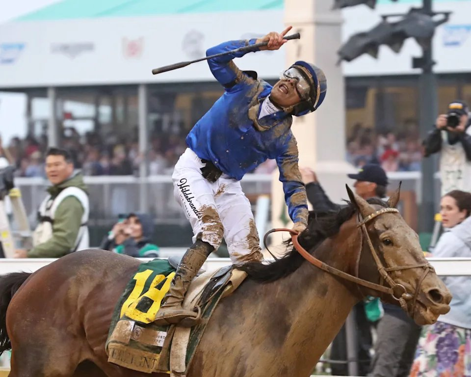

Sovereignty y Golden Tempo abren el duelo del Breeders' Cup Classic de Keeneland
La 43ª edición del Longines Breeders' Cup Classic se corre el próximo sábado 31 de octubre en Keeneland y lo hace con el guión soñado por la organización: los dos últimos ganadores del Derby de Kentucky, Sovereignty y Golden Tempo, inscritos en la misma carrera.

Sovereignty, campeón vigente de la temporada estadounidense y propiedad de Godolphin, ya tenía billete automático al Classic tras una temporada de referencia en la que se llevó el Whitney Stakes y encabezó las clasificaciones previas del Breeders' Cup. El tres años Golden Tempo, ganador del Derby de Kentucky y del Belmont Stakes bajo la monta de Flavien Prat y la cuerda de la preparadora Cherie DeVaux, es la gran incógnita de la generación joven: debutó este año en el Grado 1 y mete por primera vez el rodillo contra la generación mayor.
A ellos se suma el defensor japonés Forever Young, que llega a repetir título un año después de su victoria del año pasado. En la fase previa aparecían también Knightsbridge, Magnitude, Phileas Fogg, Napoleon Solo, The Puma y Further Ado, este último con el Dirt Mile como primera preferencia pese a estar inscrito en la Classic.
El programa completo —14 Grado 1 y más de 34 millones de dólares en premios— arranca el viernes 30 con el Future Stars Friday, dedicado a los dos años, y cierra el sábado con el Classic a las 18:16 hora local. Las apuestas de futuros ya habían señalado a Sovereignty como favorito desde finales de verano, con 3-1 en el primer pool, y a Golden Tempo como primer rival serio, cotizado a 8-1.
Para la hierba, en el calendario del fin de semana están además la Turf, la Filly and Mare Turf, la Mile y la Turf Sprint, todas con representación europea notable.
Por Martín Larrañeta